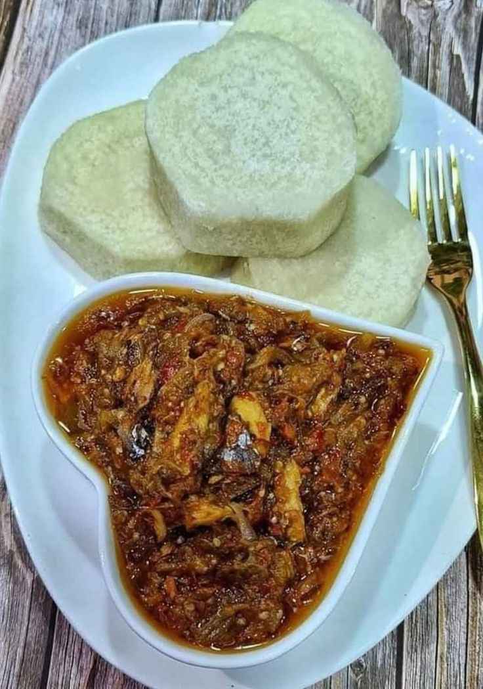

Yam and Stew is a traditional Nigerian meal made with smooth and soft yam served with rich stew. The stew is prepared with fresh ingredients and delicious seasonings.
This meal is filling and suitable for lunch or dinner. Customers can enjoy it with a choice of protein depending on availability. It is freshly prepared for a delicious traditional dining experience.
| Specification | Details |
|---|---|
| food | Yam |
| Stew | Traditional Nigerian Stew |
| Preparation | Freshly Prepared |
| Serving | Lunch or Dinner |
Price: N5,000
Back to Home